REVEAL: Controls building management to prevent structural audits.
Strata Manager Karen
Strata Manager
"Cheers to that."
BROKEN PATH
'">
REVEAL: Uses the university as a visa factory and endowment shield.
University Vice-Chancellor
Vice-Chancellor
"We aren't a university; we're a visa factory."
BROKEN PATH
'">
REVEAL: Manipulates zoning and infrastructure planning for profit.
Shadow Minister
Infrastructure Shadow Minister
"It's not insider trading if it's 'land banking'."
BROKEN PATH
'">
REVEAL: Delays legal proceedings and creates paperwork errors for Ryker.
Judge Harrison Forde
Judge
"It's just a delay. Just a paperwork error."
BROKEN PATH
'">
REVEAL: Buries competitors in litigation.
Sarah Lin
IP Lawyer
"I can bury them in litigation for five years."
BROKEN PATH
'">
REVEAL: Steals and redirects assets from estates.
The Griever
Probate
"I'm not stealing; I'm providing closure."
BROKEN PATH
'">
REVEAL: Manipulates border crossing records.
Officer Vance
Immigration Officer
"Not my fault the machine is glitchy."
BROKEN PATH
'">
REVEAL: Controls labor forces for systemic extortion.
Big Al
Union Rep
"Safety first."
BROKEN PATH
'">
REVEAL: Alters city plans to benefit Ryker's network.
David G
City Planner
"That's a valid objection."
BROKEN PATH
'">
REVEAL: Shuts down rival businesses using health code violations.
Health Inspector Ray
Health Inspector
"They'll listen next time."
BROKEN PATH
'">
REVEAL: Uses charity as a front for moving money.
Director Huff
Charity Director
"I'm not making a profit; I'm making a salary."
BROKEN PATH
'">
REVEAL: Weaponizes local homeowner rules.
Mrs. Higgins
HOA Zoning Board
"Read the book."
BROKEN PATH
'">
REVEAL: Manipulates property values for tax benefits.
Tax Assessor Miller
Tax Assessor
"Simple math."
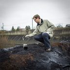
BROKEN PATH
'">
REVEAL: Kills environmental reviews for developers.
EPA Auditor Jenkins
EPA Auditor
"Project dead."
BROKEN PATH
'">
REVEAL: Uses financial repossession to intimidate.
Julian Moretti
Finance / Repo
"Maybe the panic will remind him to set an alarm."
BROKEN PATH
'">
REVEAL: Launders money through digital assets.
Lars Vinter
Crypto
"It looks like art. It's just laundry."
BROKEN PATH
'">
REVEAL: Prices tragedies into market movements.
David Wu
Hedge Fund Manager
"The tragedy is priced in."
BROKEN PATH
'">
REVEAL: Controls supply chains.
Hector Salamanca
Infrastructure
"I control the supply."
BROKEN PATH
'">
REVEAL: Can orchestrate targeted power outages.
Grid Engineer John P
Grid Engineer
"Ninety seconds."
BROKEN PATH
'">
REVEAL: Sabotages international investigations.
Inspector Klaus Weber
Europol
"Tragic."
BROKEN PATH
'">
REVEAL: Provides decentralized identity erasure and secure communications.
The Locksmith
Hacker
"Plausible deniability."
BROKEN PATH
'">
REVEAL: Designs structural coverups for tier-one developers.
Mateo Silva
Architect
"Structuring the future."
BROKEN PATH
'">
REVEAL: The embodiment of the corrupt political system. Deals in optics, leverage, and survival politics. Handles "guilt money."
Ross Kinley
Councillor / Soon-to-be NSW Premier
"Visibility is accountability."
BROKEN PATH
'">
REVEAL: A terrified reflection of surveillance, but secretly a dumb, easily read lapdog with hidden vices who thinks he's invisible.
Clipboard Man
Surveillance / Kinley's Fixer
"Believes morality is something you declare."
BROKEN PATH
'">
REVEAL: Investigates financial crimes with relentless determination.
Agent Allie Miller
FBI Field Agent
"I've got a shovel and a bad attitude."
BROKEN PATH
'">
REVEAL: A prosecutor who runs a safe house for whistleblowers. Sees the courtroom as a boxing ring.
'Iron' Irene
Public Prosecutor
"I don't do deals. I grind."
BROKEN PATH
'">
REVEAL: Highly intelligent cop kept down by the system. Cynical but serves as a reluctant mentor to Ethel.
Sticky
Police Detective
"Some things you don't chase. You let 'em burn."
BROKEN PATH
'">
REVEAL: A concerned citizen with natural pattern recognition abilities, gathering intel from her cafe.
Penelope
Barista / Social Engineer
"Glad I look dumb. It's my best feature."
BROKEN PATH
'">
REVEAL: Ensures bodies are examined truthfully, cannot be bought.
Dr. Al-Fayed
Chief Coroner
"I speak for the dead. They never lie."
BROKEN PATH
'">
REVEAL: Blocks shipments out of stubborn adherence to safety.
Pieter The Block
Harbor Safety Inspector
"You can wait. Or you can swim."
BROKEN PATH
'">
REVEAL: A concerned citizen who spots structural lies on construction sites.
Jai
Cable Puller / Laborer
"It won't burn the building down."
BROKEN PATH
'">
REVEAL: Incorruptible Swiss compliance enforcer.
Frau Edelstein
Compliance Officer
"In Switzerland, we do not have glitches. We have fraud."
BROKEN PATH
'">
REVEAL: Old-school journalist willing to bleed for the truth.
Jack 'The Shiv' Hennessy
Investigative Journalist
"I'll bring my pen. Let's see who bleeds first."
BROKEN PATH
'">
REVEAL: Uncovers the deep rot of the Ryker network on national television.
Sarah K
Investigative Journalist
"Ghosts leave cold spots. I've found the cold spot."
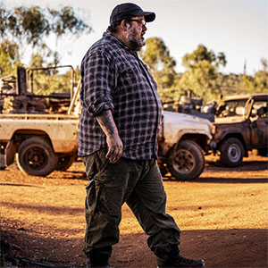
BROKEN PATH
'">
REVEAL: Refuses to sell his land to developers.
Old Man Miller
Station Owner
"Tell your boss he owes me a new cartridge."
BROKEN PATH
'">
REVEAL: Wealthy antagonist to Ryker, fights him with deep pockets.
Angus 'Gus' Dunbar
Hedge Fund / Grazier
"Tell Ryker to pack a lunch."
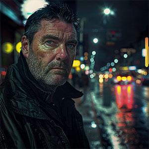
BROKEN PATH
'">
REVEAL: Investigates on behalf of the resistance.
Ron Jube
Private Investigator
"We're watching."
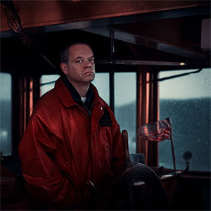
BROKEN PATH
'">
REVEAL: Controls the port and delays illicit shipments.
Captain 'Sully' Sullivan
Harbour Master
"Unless Ryker can pull the moon closer to the earth, he waits."
BROKEN PATH
'">
REVEAL: Refuses bribes; strictly follows union rules.
Sal the Doorman
Building Union Rep
"Move the car. Now. Have a nice day."
BROKEN PATH
'">
REVEAL: Refuses to divert water from his community for corrupt projects.
Diego
Water Engineer
"Tell him to come."
BROKEN PATH
'">
REVEAL: Protects vulnerable tenants from corporate harassment.
Mrs. Liu
Tenancy Tribunal Adjudicator
"I have a very comfortable chair. I can play all day."
BROKEN PATH
'">
REVEAL: Controls her turf, refuses to be intimidated.
Big Marge
Publican
"In this front bar, I am the Prime Minister, the Pope, and the Police Commissioner."
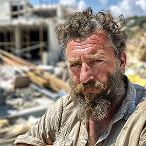
BROKEN PATH
'">
REVEAL: Values historical integrity over bribes.
Dr. Aris Vokos
Structural Engineer
"Build your hotel in hell."
BROKEN PATH
'">
REVEAL: Halts construction sites on safety grounds, answering only to the weather.
Davo the Crane Driver
Crane Driver
"I'm God in a high-vis vest."
BROKEN PATH
'">
REVEAL: Protects witnesses and answers to a higher authority.
Father Mateo
Parish Priest
"The boy stays. You leave."
BROKEN PATH
'">
REVEAL: A stickler for rules who refuses to process fraudulent claims.
Shazza from Accounts
Payroll Clerk
"Jog on."
BROKEN PATH
'">
REVEAL: Destroys evidence, but only on his own terms.
Frank 'The Crusher'
Scrapyard Owner
"Everything has a weight."
BROKEN PATH
'">
REVEAL: Spots the patterns in the data.
Elias Finch
Tutor
"The pattern is the proof."
BROKEN PATH
'">
REVEAL: Relentless federal investigator.
Det. Insp. Macready
AFP Major Crime
"Twenty-eight years. I don't forget a file."
BROKEN PATH
'">
REVEAL: Tracks logistics and corruption via OSINT.
Kate Hallings
Investigative Journalist
"Follow the freight."
BROKEN PATH
'">
REVEAL: Edits "The Southern Objective," publishing hard truths.
Mara Quinn
Senior Reporter
"News without the polish."
BROKEN PATH
'">
REVEAL: Accidentally deletes Dominic's financial records out of pure apathy.
Ash
Temp Data Entry
"That file deserves to die."
BROKEN PATH
'">
REVEAL: Plays dumb but steals encryption keys for her own reasons.
Kaylee
Front Desk / Corporate Spy
"Hi! Do you want a cookie?"
BROKEN PATH
'">
REVEAL: Obsessed with getting his rental bond back, accidentally exposes labs to the EPA.
Stevo
Property Manager
"I'm not losing the bond, Dom."
BROKEN PATH
'">
REVEAL: A "female Richard Feynman" with a brilliantly chaotic mind.
Gran (Dr. Elizabeth Ryker)
Industrial Chemist
"Chaos with a license."
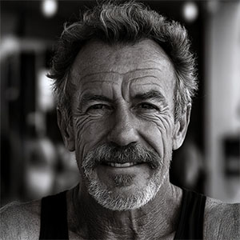
BROKEN PATH
'">
REVEAL: The rock of the family. Raised Ethel.
Pop
Juvenile Justice Psych
"He was the rock."
BROKEN PATH
'">
REVEAL: Married to an abusive High Court Judge.
Isla's Mother
High Society Wife
"[None]"
BROKEN PATH
'">
REVEAL: Teacher at South Sydney High. NSW Dept of Education whistleblower on diagnostic-funding misuse for ADHD and autism. Fighting the system from within.
Trish Halloran
Teacher
"The system isn't designed for all kids... but it could be. It should be."
BROKEN PATH
'">
REVEAL: Long-time bully of staff and parents. Used by Dominic Ryker in 2003 to lean on a father through his son's enrolment. Moved to Gosford after Trish surfaced funding discrepancies.
Phillip Miller
Principal
"The trick is the word harassment. It's a magic word."
BROKEN PATH
'">
REVEAL: Controls access in the music industry. Hacked by Isla.
Shiny Headed Man
Music Industry Gatekeeper
"Music. Industry. Access."
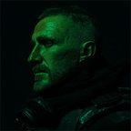
BROKEN PATH
'">
REVEAL: Executes contracts with absolute deniability.
Commander Kaelen
PMC Operator
"Contract fulfilled."
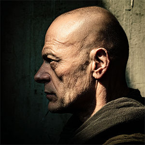
BROKEN PATH
'">
REVEAL: Unstoppable cross-border logistics.
Yuri Volkov
Logistics / Transport
"We don't ask questions."
BROKEN PATH
'">
REVEAL: Provides essential care.
Dr. Kovac
Regional Medical Director
"Essential care, regardless of borders."
BROKEN PATH
'">
REVEAL: Clinician tied to Isla's psychological evaluations.
Dr. E. Carter (The Evaluator)
Psychiatrist
"Sanctuary from the noise."
BROKEN PATH
'">
REVEAL: A structural psychopath manipulating systems of power.
Dominic Ryker
Architect of the System
"Structure isn't a suggestion."
BROKEN PATH
'">
REVEAL: Fights the system from the inside by documenting its flaws.
Ethel Ryker
Systems Analyst / Observer
"I document what others don't see."
BROKEN PATH
'">
REVEAL: The voice of the trauma, hacking the narrative through art.
Isla
Lead Singer / Survivor
"Silence was the Trauma."
BROKEN PATH
'">
REVEAL: The musical backbone of the group.
Reuben Oakes
Lead Guitar
"Arrangements. The band existed before her, but she made it real."
BROKEN PATH
'">
REVEAL: A seasoned pro entirely focused on tone, not the lifestyle.
Seb Harlow
Rhythm Guitar
"The party ended twenty years ago. Now it's just about tone and pocket."
BROKEN PATH
'">
REVEAL: Treats drumming with military precision and mechanics.
Dean Vasic
Drums / Airport Security
"It's mechanics and muscle memory now. The chaos is for the kids."
BROKEN PATH
'">
REVEAL: Finding truth in the pocket.
Flynn Calder
Bass
"Just lock in with the kick. That's the only truth that matters."
BROKEN PATH
'">
REVEAL: A front for Director Huff.
Patent Clerk O'Malley
Unknown
"Approval is just a stamp."
BROKEN PATH
'">
REVEAL: A front for Strata Karen.
Strata Gary
Unknown
"The by-laws are the by-laws."
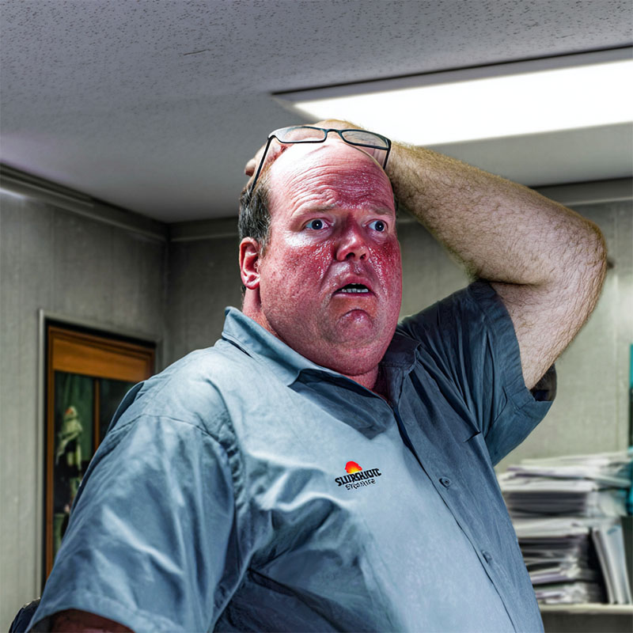
BROKEN PATH
'">
REVEAL: Cooks. Spud is his and cannot be told anything. Every attempt he makes to shut him up in public is louder than the thing he is hiding.
Bruce Carter
Unknown
"Professional pool maintenance."
BROKEN PATH
'">
REVEAL: The yard. Drums down the back behind the cartons, labels turned to face the wall, and four pallets of bunding nobody ordered.
Sunrise Pool Supplies
Unknown
"We stock the heavy stuff."
BROKEN PATH
'">
REVEAL: Captures the chaotic rise of Isla in Music Force Magazine.
Eli Ward (Music Journalist)
Unknown
"The noise tells the story."
BROKEN PATH
'">
REVEAL: Documents Isla's emotional return to the stage.
Eliza Trenholm (Music Blogger)
Unknown
"I review the era, not the album."
BROKEN PATH
'">
REVEAL: Tracks the cultural impact of Isla's art shows.
Julia Renn (Culture Correspondent)
Unknown
"Culture is the bruise."
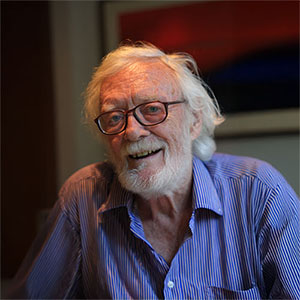
BROKEN PATH
'">
REVEAL: Wrote the definitive piece on Elizabeth Ryker's work.
Michael Harren (Field Researcher)
Unknown
"Data without context is just weather."
REVEAL: Washington tenancy tribunal stooge.
Keel Vernon
Unknown
"Eviction is a process, not a punishment."
REVEAL: Tracks international money flow with cold precision.
Agent Aris Vosh
Europol Intelligence Coordinator
"The borders are imaginary. The money is real."
BROKEN PATH
'">
REVEAL: Caught in the crossfire of Dominic's evasion.
Tourist in Prague
Gap Year Student
"I just wanted to see the astronomical clock."
REVEAL: Holds prison secrets regarding the evasion.
Dmitry
Inmate
"The walls here talk, but they don't listen."
BROKEN PATH
'">
REVEAL: Facilitates untraced luggage movement.
Jan Horák
Baggage Handler
"I don't look at the tags. I just throw the bags."
BROKEN PATH
'">
REVEAL: Witness to the mid-air evasion.
Klara Novotná
Flight Attendant
"Please return your tray tables to their full upright position."
BROKEN PATH
'">
REVEAL: Enforces discipline.
Gleb
Russian Faction
"Cold blood runs slower."
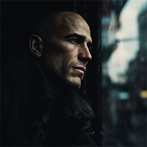
BROKEN PATH
'">
REVEAL: Cleans up systemic messes.
Ratibor
Russian Faction
"A problem is just a man who is still breathing."
BROKEN PATH
'">
REVEAL: Handles the money side of Russian interference.
Svyatogor
Russian Faction
"We buy the silence."
BROKEN PATH
'">
REVEAL: The untraceable operative.
Lev
Russian Faction
"The ghost leaves no footprints."
BROKEN PATH
'">
REVEAL: Documents the ground truth of the system's collapse.
Conflict Reporter
Freelance Correspondent
"You get used to the smell of burning paper."
REVEAL: Observes shady dealings from his local pub window.
Surry Hills Resident
Local Bloke
"Mate, I just wanted a quiet pint."
REVEAL: Experiences the direct impact of corrupt infrastructure.
Local Resident
Bystander
"Council won't do a bloody thing about it."
REVEAL: Hosted by "Useful Idiots" Chad & Dex. Their 'American Freedom' think-tank sponsor is funded entirely by a Russian shell company to push destabilizing propaganda.
Keep It Real Bro Podcast
Podcast Entity
"The Iron Discourse. No Filters. Hard Truths."
REVEAL: "Ideological Purists". Unknowingly bankrolled by an unimaginably violent, unnamed shadow organization designed purely to maximize societal polarization and disruption.
Zero State Media
Radical Left Podcast / Media Hub
"Every interaction is a power dynamic. If you aren't dismantling the system, you are the system."
REVEAL: An automated or rogue intelligence scraper quietly mapping the entire network's corruption, waiting for the right moment to dump the data.
OSINT Monitor
Open-Source Intelligence
"Everything leaves a digital wake."
REVEAL: A tragic casualty of the network. She found toxic run-off or a cartel dumping ground near the Langtang facility and was quietly "disappeared."
Chloe Vance
Horticulture Student (Missing)
"I just wanted to study the local flora."
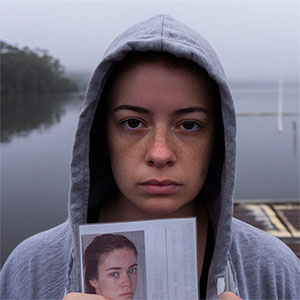
BROKEN PATH
'">
REVEAL: Desperately searching for Chloe. Her efforts are being actively suppressed by local police, including her own corrupt uncle, Officer Vance.
Jess Vance
Concerned Sister
"Has anyone seen my sister?"
BROKEN PATH
'">
REVEAL: Annexes the Ryker sisters as case material for a forthcoming book that never arrives. Treats refusal as confirmation. Admiration as category capture — the only voice in the discourse that does not attack Ethel, and the only one she cannot survive being for'd by.
Dr. Cosgrove Wendlebury Reeve
Senior Fellow / Public Intellectual
"I do not require your agreement. I require your presence."
BROKEN PATH
'">
REVEAL: Private charter operator with a Prague hub. Manifests are confidential. The Sydney route most recently of forensic interest is no longer available on request.
Bohemia Airlines
Charter Carrier · Prague
"Discretion is part of the seat."
BROKEN PATH
'">
REVEAL: Runs the residue analysis on her own money because no agency would commission it. It is now cited in two proceedings she was never told about.
Dr. Elizabeth Vance
Forensic Chemist
"Chemistry doesn't lie."
BROKEN PATH
'">
REVEAL: The lease is paid to December, the phones are on and the payroll ran on the first. Nobody has worked on that floor since September.
ORIEL
AI Research Company
"Research to deployment, on our own timeline."
BROKEN PATH
'">
REVEAL: The public face of a technology he could not explain in a room. Everyone in the industry knows it and nobody has ever said it out loud.
Callum Reidy
Co-Founder, ORIEL
"Big week. Can't say why yet."
BROKEN PATH
'">
REVEAL: She was at the vet with her dog on the night the floor emptied, and off work the next day. She is the only one who was not there, and nobody has worked out why she is alive.
Nell
Evaluation, ORIEL
"I check whether it knows what it doesn't know."
NO IMAGE BY RULING
REVEAL: The company runs on her work. Eleven public posts in three years, no photograph, and she will be a footnote in every article ever written about it.
L. Ostrowska
Research Lead, ORIEL
"The evaluation is a photograph of the system, taken in bad light."
BROKEN PATH
'">
REVEAL: Eleven followers. She rang him every Sunday for eleven years and he did not ring on the sixth of September.
Maureen R.
Callum's Mother
"He rang me every Sunday for eleven years."
BROKEN PATH
'">
REVEAL: A booking page, a venue on hire and a waiting list. Diagnoses strangers it has never met, in public, for free. There have been two places left at the next intake for nine months.
Light After Harm
Retreat Business
"Beloveds, the circle holds itself."
BROKEN PATH
'">
REVEAL: A firm that sells calibrated forecasts and publishes some of them for free. Every figure is correct and independently checkable. Two of the firms whose numbers it has defended in public are clients, and it has never said which.
Threshold
Decision Analysis
"Estimates, not opinions."
BROKEN PATH
'">
REVEAL: Writes about exactly the kind of patient the whole country currently has an opinion about, and has never once named her.
Dr J. Marchetti
Clinical Psychologist
"Distress is usually about something."
BROKEN PATH
'">
REVEAL: Three practitioners and a part-time researcher. Workshops pay for it, there is no grant and no press office. It has already published the mechanism of nearly everything that happens in this feed — the referral that goes where nobody can act, the twenty complaints that get less scrutiny than two, the warning that arrives a hundred and forty days early — and is read by nobody it would help. It teaches the one method that would have worked for either sister, eleven hundred kilometres away, without ever having heard of them.
The Telling Practice
Practice · Research · Reading List · Adelaide
"People are the experts of their own lives."
BROKEN PATH
'">
REVEAL: No office, no funding and no legal existence. Four people who were in four different programs in four different states, who have never met, posting under one name because not one of them can post under their own. Their families still believe the programs worked.
after the program
Survivor Collective
"I learned to say the sentence they wanted in about nine days."
BROKEN PATH
'">
REVEAL: The account says we. The we is a sister, a mother who cannot read the paperwork any more, three boxes of it, and a solicitor who took it for nothing and read all of it, which nobody had ever done.
Inquest for Dale
Family Campaign
"Nine years. Four applications. Still asking."
BROKEN PATH
'">
REVEAL: Thirty years on the bench and never said any of this while he was on it.
R. Ennals
Retired Magistrate
"The question is never whether a body has the power to look."
BROKEN PATH
'">
REVEAL: A man who has actually been on the ward the clinical accounts write about. Everything he reports is true and checkable — the discharges in the week before Christmas because of beds, the nine days with no call back, the community worker carrying forty-one people. Everything he says about WHY is not. He is right about the harm and wrong about the cause, and he is the only firsthand voice in the feed.
The Real Cure
Former Inpatient · Substack
"They are not failing. They are succeeding at something else."
BROKEN PATH
'">
REVEAL: Eleven followers and no history. Argued with strangers under a tabloid story for three days and has not posted since.
Rob
Brother of One of the Twelve
"That's my sister you're all doing jokes about."
BROKEN PATH
'">
REVEAL: Has his sister's dog, her spare key, and her parking paid to the eleventh. The police report records her as not considered at risk.
Craig T.
Electrician, Wollongong
"Her car is still at Kogarah where she left it on the second."
BROKEN PATH
'">
REVEAL: Cleaned an empty floor for three weeks because nobody told her to stop. Every invoice was paid the day it was issued.
Rina
Night Cleaner
"The bins are empty. I still take them down, because that is the run."
BROKEN PATH
'">
REVEAL: Decommissioned a twelve-camera system for a client he never met. The recorder had already gone when he arrived, and the invoice was paid the same day.
Troy — Camera & Access
CCTV & Access Control
"Work order correct. Access countersigned."
BROKEN PATH
'">
REVEAL: Processed twelve final pays into twelve accounts. All twelve cleared. All twelve are still open.
Ledgerline Payroll
Payroll Bureau
"We just do the runs."
BROKEN PATH
'">
REVEAL: Took a job he was not allowed to name, from a recruiter who knew exactly what he had built. Posted from the gate and never again.
Juho H.
Cooling Systems · Espoo
"Question four is what is the name of the company."
BROKEN PATH
'">
REVEAL: The first interviewer in fifteen years who asked about failure modes before salary. He signed, flew, and stopped.
R. Bustos
Metallurgist · Antofagasta
"First offer that asked about failure modes before salary."
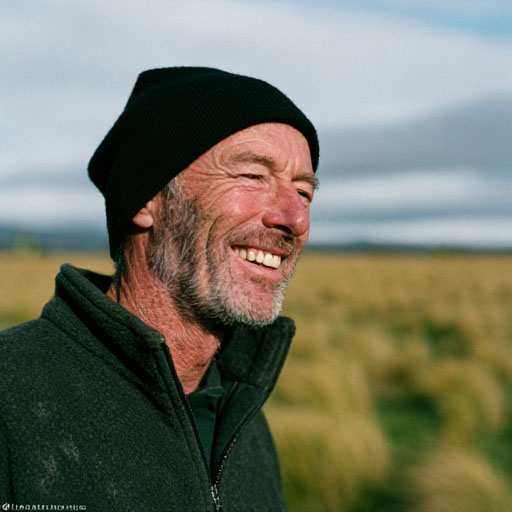
BROKEN PATH
'">
REVEAL: Recruited by a stranger who knew his exact dish model, which nobody ever does. He said he would be back in three weeks.
Kev
Ground Station Tech · Southland
"Back in three weeks either way."
BROKEN PATH
'">
REVEAL: A recruiter knew her relay platform down to the firmware version. She flew without ever learning the name of the site or the country.
A. Reinholt
Protection & Control · Porto
"I still do not know the name of the site."
BROKEN PATH
'">
REVEAL: The recruiter knew a detail about his commissioning work that is not written down anywhere. Three days, business class, and no return.
D. Okafor
HV Commissioning · Lagos
"Three days. They have sent the flights."
BROKEN PATH
'">
REVEAL: Hired to freeze ground below the water table on a shaft that appears in no permit, no tender and no trade press.
Hanne Vik
Ground Freezing · Trondheim
"Deep shaft, water problem, no name."
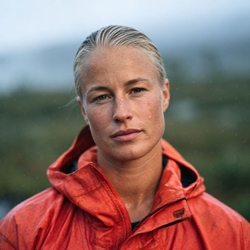
BROKEN PATH
'">
REVEAL: The most careful of them. She refused to sign without a client name, was given one, looked it up, and found a company registered six weeks earlier. She went anyway.
M. Orsted
Hydrogeology · Trondheim
"Made them put the client name in the letter."
BROKEN PATH
'">
REVEAL: Signed an eight-week contract without being told the country. He said so out loud to two people and both told him to take the money.
N. Bekele
Transmission Planning
"I still do not know the country."
BROKEN PATH
'">
REVEAL: The brief was a page and a half of performance criteria for a building with every noun removed. She noticed, said so, and took it.
L. Serrano
Acoustics · Valencia
"A page and a half of criteria and not one noun."
BROKEN PATH
'">
REVEAL: No history before October. Has never accused anybody of anything, and has been asking the same question about the same woman for four months.
Plain Sight
Anonymous Account
"Not attacking her. Where there's smoke there's fire."
BROKEN PATH
'">
REVEAL: Asks a fair procedural question, is answered, and asks it again. The answer has never once appeared in her feed.
Dee
Anonymous Account
"Still waiting. Not going away, it is a straightforward one."
BROKEN PATH
'">
REVEAL: Repeats a sentence he did not write as something he has been chewing on all week. He got it from an account he does not follow.
Col
Anonymous Account
"Common sense is not that common."
BROKEN PATH
'">
REVEAL: Concedes the target probably means well in every single post she makes about her. She is the one people quote back as proof the criticism was fair.
Mel
Anonymous Account
"not having a go at all but"
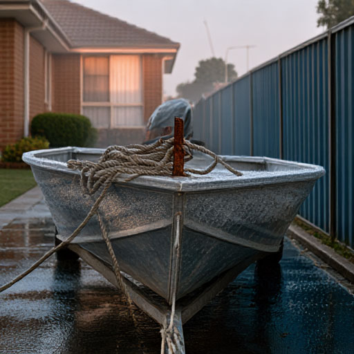
BROKEN PATH
'">
REVEAL: Not political, by his own description. Has posted about the same woman four times, and repeated the line to his family at Christmas.
Barry
Anonymous Account
"Be honest. You have never once made a coding error yourself?"
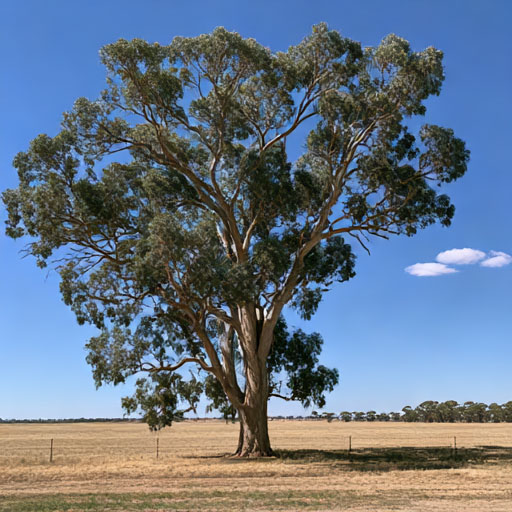
BROKEN PATH
'">
REVEAL: Says he has asked four times. He has. He has also been answered three times and has never acknowledged one of them.
Ratepayer
Anonymous Account
"Not saying the numbers are wrong."
BROKEN PATH
'">
REVEAL: Has never met a single one of the people whose exhaustion she describes in public. Nobody can object to a word of it.
K. Reynolds
Anonymous Account
"Kindness costs nothing."
BROKEN PATH
'">
REVEAL: Spent three days in a town with no power and did not find it strange, because nobody living there did.
Bel
Overland Traveller
"Power has been off since Tuesday. Nobody is bothered."
BROKEN PATH
'">
REVEAL: Gave the figure twenty days before anybody began counting, named who would be killed, and has refused every request for a second number since.
H. Vardy
Field Epidemiologist
"It is not the total. It is the shape."
BROKEN PATH
'">
REVEAL: Locked the doors at eleven with eighteen people inside and delivered a baby in an unlit corridor. One of the men outside was a patient's son.
T. Bencik
District Nurse
"The doors held. The dispensary window did not."
BROKEN PATH
'">
REVEAL: Was half of a two-man voice for five months and the audience never knew which half. The account posted something cheerful the day after he left.
Dex Mullaly
Formerly Keep It Real Bro
"This is me. Not doing a statement."
REVEAL: Passed Level 6, 40 Ellery Street on 23 September, three weeks after the floor emptied, because the doors were compliant and the egress was clear. He is watching a basement fill with diesel generators and a bulk fuel line and is writing it up properly, one annual statement at a time. He does not know he is in anybody's story.
Warren Doust
Fire Safety · Accredited Practitioner
"My business is where the exits are."
REVEAL: Has been letting Level 6, 40 Ellery Street since September. The lease runs to December, the direct debit is live and clearing, and the tenant has not attended since the third. It asked the trade what to do and got no answer, and it keeps taking the money.
Halden Property
Commercial Leasing & Building Management
"Available January. 840sqm, fully fitted."
BROKEN PATH
'">
REVEAL: Published the end of the whole thing in four lines on a Monday. Nobody read it.